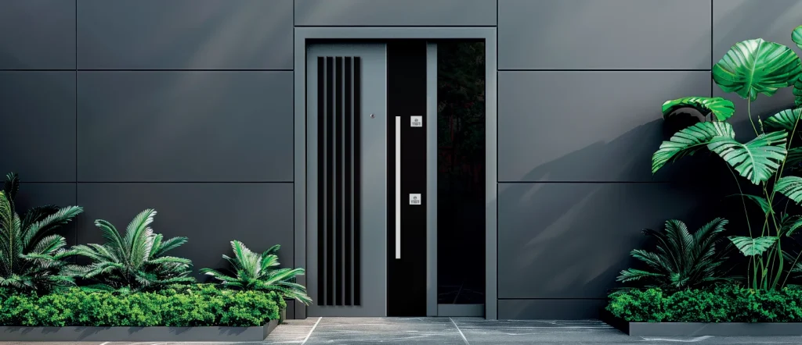

إذا كنت تبحث عن باب مدخل يلبي توقعاتك في الأمان والجمال معاً، فالأبواب الفولاذية بسطح Kompozit مناسبة لك. ما الذي يميزها عن غيرها؟ وهل هي متينة كما يُقال؟ لنستعرض ذلك معاً.
ما هو باب Kompozit وكيف يُصنع؟
أبواب Kompozit، كما يشير الاسم، تتكون من مواد متعددة مدمجة معاً. تُضغط نواة خشبية مع تقوية من الألياف الزجاجية ومكونات خاصة تحتوي UVP (Ultra Viole Protection) تحت حرارة وضغط عاليين لتشكيل سطح واحد متين.
بهذه الطريقة يقدم الباب أداءً متفوقاً ليس جمالياً فحسب، بل ومن حيث المتانة الفيزيائية. هذه التقنية ميزة كبيرة للأبواب المعرّضة لظروف الخارج.
الخصائص الأساسية للأبواب الفولاذية بسطح Kompozit
هيكل فولاذي + سطح Kompozit = أقصى متانة
مزايا الأبواب الفولاذية في الأمان لا جدال فيها. عند إضافة سطح Kompozit يتحول الأمان إلى مظهر جمالي. الهيكل الفولاذي يضمن المتانة البنيوية، بينما يعمل سطح Kompozit كدرع ضد العوامل الخارجية.
مقاومة الماء والرطوبة: من الحمام إلى الشرفة
من أبرز ميزات Kompozit مقاومتها للماء والرطوبة. الأبواب الخشبية التقليدية تتورم وتتلف، وأبواب MDF تتأثر بالرطوبة. أما أبواب Kompozit فتتجنب هذه المشاكل ويمكن استخدامها سنوات في الحمام والمرحاض والشرفة.
عزل الصوت: مساحات معيشة هادئة
عزل الصوت مهم جداً في شقق العمارات. بفضل البنية الداخلية المدعومة بـ sunta وMDF، تقلل الأبواب الفولاذية بسطح Kompozit الضوضاء الخارجية بشكل ملحوظ.
الجمال والتنوع
خطوط عصرية، مظهر خشبي طبيعي، أسطح مط أو لامعة… يمكن تخصيص أبواب Kompozit وفق أسلوب ديكورك، سواء لمنزل كلاسيكي أو تصميم بسيط.
مزايا الأبواب الفولاذية بسطح Kompozit
اتصل بنا
اطلب عرض سعر لمشروعك
احصل على معلومات وعرض سعر مخصص لنماذج الأبواب الفولاذية بسطح Kompozit.
أين تُستخدم؟
باب مدخل المنزل
خيار مثالي لتعزيز أمان المنزل وإنشاء مدخل أنيق، مقاوم للعوامل الخارجية وجذاب المظهر.
مداخل العمارات
في المساحات المشتركة تبرز المتانة. هذه الأبواب تحافظ على حالتها رغم الاستخدام المكثف.
المكاتب والمساحات التجارية
تجمع بين المظهر المهني والأمان في مداخل المكاتب.
المناطق الرطبة (حمام، مرحاض، شرفة)
بفضل مقاومة الماء والرطوبة تُستخدم دون مشاكل التورم أو التلف الشائعة في الأبواب التقليدية.
ما الذي يجب مراعاته عند الاختيار؟
شهادات الجودة
اختر منتجات معتمدة من TSE وCE. هذه الشهادات تثبت اختبار الباب ومطابقته للمعايير.
خبرة الشركة المصنعة
الشركات الراسخة مثل Yiğit Çelik Kapı التي تنتج منذ 2003 تعكس خبرتها في جودة المنتج.
مدة الضمان
الضمان الطويل دليل على ثقة المصنع. يُفضَّل ضمان لا يقل عن سنتين لأبواب Kompozit.
التركيب ودعم ما بعد البيع
العمل مع شركات تقدم تركيباً احترافياً وخدمة ما بعد البيع يمنحك ميزة على المدى الطويل.
نصائح الصيانة والتنظيف
رغم أن أبواب Kompozit تحتاج صيانة بسيطة، فإن اتباع قواعد أساسية يطيل عمرها:
- تنظيف دوري: يكفي مسحها بقطعة قماش رطبة. تجنب المواد الكاشطة.
- فحص المفصلات: افحصها مرة سنوياً وادهنها عند الحاجة.
- صيانة القفل: نظّف آلية القفل وادهنها مرة في السنة.
- الخدوش والصدمات: تجنب ملامسة الأجسام الصلبة.
السعر وتحليل التكلفة
تختلف أسعار أبواب Kompozit حسب المقاس والتصميم والمواصفات. مع العمر الطويل والصيانة البسيطة، تكون جذابة من حيث التكلفة والفائدة.
قد تبدو استثماراً أعلى على المدى القصير، لكن الاستخدام لسنوات دون الحاجة للاستبدال يوفر على المدى الطويل.
Kompozit مقابل الفولاذ Klasik: أيهما أفضل؟
| الخاصية | بسطح Kompozit | فولاذ Klasik |
|---|---|---|
| الجمال | عصري وتصاميم متنوعة | خيارات محدودة |
| مقاومة الماء/الرطوبة | عالية جداً | متوسطة (تعتمد على الطلاء) |
| عزل الصوت | عالٍ | متوسط |
| الصيانة | بسيطة | طلاء دوري |
| السعر | متوسط–مرتفع | متوسط |
الخلاصة: هل أشتري باباً فولاذياً بسطح Kompozit؟
إذا أردت أماناً دون التنازل عن الجمال، أو باباً للبيئات الرطبة، أو عزل صوت مهم لك، فهذا الخيار يستحق الدراسة.
بعمر طويل وصيانة بسيطة وتصاميم عصرية، تمثل هذه الأبواب من أذكى الاستثمارات اليوم. مع منتج من مصنع موثوق تحصل على ضمان استخدام سلس لسنوات.
في Yiğit Çelik Kapı، نخدم آلاف العملاء بأبواب Kompozit منذ 2003. بإنتاج معتمد من TSE وقدرة 40.000 m² نقدم حلولاً مخصصة لكل مشروع.
Yiğit Çelik Kapı
سلسلة Kompozit الفاخرة
تصفّح نماذج الأبواب الفولاذية بسطح Kompozit أو اطلب عرض سعر.